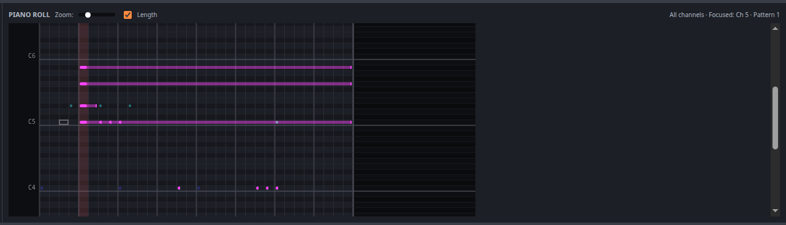
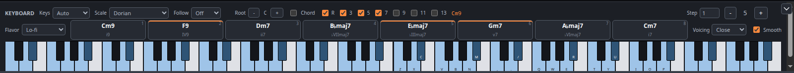
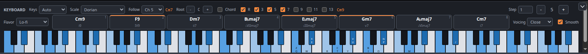

Voxby
A synth music tracker for the browser, aimed at music small enough to ship inside a js13kGames entry: a finished song is a few hundred bytes of plain JavaScript data plus a tiny playback routine.
Voxby is a tracker. A song is up to 16 channels, each with up to 36 patterns of notes, and a pool of voices any channel or any single note can play. The sequencer says which pattern each channel plays at each step of the song. Every note you hear is synthesized on the spot from a voice's settings. There are no samples. This is why a song fits in a few hundred bytes.
Notes are held, not fired. A note sounds until something ends it — a note-off, a gate, or its own envelope decaying to silence. That one rule is what portamento, per-row tempo and per-note instrument changes are all built on, and it is the main thing that differs from SoundBox, which this editor grew out of. See Sustain, and why a note might never stop if a channel drones.
Quick start

- Press Start.
- Press Open and pick a song from the library. Starting from someone else's arrangement teaches the layout faster than an empty grid.
- Press Play. The cursor runs down the grids as the song plays, and the keys sounding at each moment light up on the piano.
- Click a cell in the pattern grid and play a few notes on the piano, or on the computer keys. Z X C… is the bottom octave. Q W E… is the one above.
- Press Space to hear the sequence row you are working on, and Export JS when you want to keep it.
Nothing is stored on a server, and there is no autosave. A song lives in the page until you Export JS (which doubles as save) or copy a Share link. Closing the tab loses it. The editor warns before discarding unsaved work, but reloading past that warning is final.
The window

- Top bar: new/open/export/share, transport, the accent colour, this manual, and About.
- Sequencer: the running order, plus tempo and pattern length.
- Patterns: the notes in whatever each channel is playing at the sequencer's current row. Every channel is shown side by side. The highlighted column is the one you are editing.
- Keyboard: note entry, and the scale/chord helpers.
- Instrument: the voice being edited, and the selected channel's mixer strip.
- Scope: what the output actually looks like.
Every control in the editor has a hover tip explaining what it does, so this manual sticks to the parts that don't fit in one: how the pieces relate, and the things worth knowing before you can guess them.
Sequencer
One row per step of the song, one column per channel. A cell holds a pattern number: type 0–9 or A–Z to place one of that channel's 36 patterns, Backspace to clear it. Hold Shift while typing to drop to the next row as you go, which is how you enter a run of steps quickly.
The same pattern number can appear as often as you like. That is how a song gets long without getting big. Clicking anywhere in a channel's column also makes it the selected channel. The instrument panel and the highlighted pattern column follow your cursor around.
The sequencer works the same way in the piano roll: it stays on screen there too, and clicking a cell lets you type a pattern number into it exactly as above. Once you arrow away, or click into the piano roll itself, typing goes back to entering notes.
Two song-wide settings live here, because they apply to every pattern: BPM and Rows (rows per pattern). Four rows make a beat, so 32 rows is eight beats (two bars of 4/4). Beat only changes which rows get a highlight. Set it to 3 for a waltz or 8 for 32nd-note patterns.
Rows resizes every pattern in the song. Making it smaller throws away whatever was past the new last row, and that cannot be undone.
Patterns
Each pattern has four voice columns. Four notes can sound at
once in one channel, which is what makes chords possible. A pattern only exists
where the sequencer put it. If a channel's column header reads -
instead of Pat 3, there is nothing at this step to write into.
Place a pattern number in the sequencer first.
Each voice column is five cells wide:
| Note | The pitch. === is a note-off:
it ends whatever this column is playing. |
|---|---|
| Ins | Which voice from the song's pool this note uses. Blank means "the same as last time". |
| Vol | Velocity, 01 to 7F. Blank means
"the same as last time". |
| Cmd | An effect command. See Effects. |
| Val | Its value. |
Only the channel you are editing shows all five. Every other channel shows its notes alone, because sixteen channels of twenty cells is not readable. A note on one of those channels that is carrying a velocity, an instrument or an effect is marked with a small dot, so nothing is ever hidden without a sign.
Tab moves between the sequencer and the pattern grid; Shift+Tab goes back. Which grid has the cursor decides what typing does.
Enter inserts a row at the cursor. This pushes the rest of the pattern down and drops whatever fell off the end. This is useful for making room in a part you have already written.
Piano Roll

Use the View dropdown in the top bar to switch between Tracker (traditional vertical columns) and Piano Roll (horizontal grid). The piano roll shows time left-to-right and pitch bottom-to-top. Many musicians from DAW backgrounds prefer this view.
All channels are visible at once with per-channel colors. The focused channel (from the instrument panel) draws at full brightness. Others are dimmed for context. Notes show as colored blocks on the grid.
Note Entry
Click an empty cell to place a note. Right-click any note to delete it. The computer keyboard works the same as in tracker view: type Z–M, Q–U to enter notes. Each key writes its own pitch, and the cursor jumps to that pitch — so the cursor is always on the note you played last. The row advances by the edit step once you release every key, which is how a held handful of keys becomes one chord on one row.
Caps Lock enters the note the cursor is already on. Arrow to a cell, press it, and the cursor steps down by the edit step. This is note entry without having to work out which key carries that pitch — useful when the arrow keys are what you are steering with.
A tooltip follows your mouse showing which note you are hovering over. Piano key labels appear on the left at each C note (C1, C2, C3...).
Selection

Click and drag in empty space to select notes in a rectangular region. A dashed blue marquee box appears while dragging; selected notes get bright blue outlines.
Click and drag on a selected note to move the entire selection in time (horizontally) or transpose it (vertically). Ghost previews show where notes will land. Release to commit the move.
Click in empty space to deselect. Ctrl+A selects all notes in the pattern.
Clipboard
Ctrl+C copies selected notes. Ctrl+V pastes at the cursor. Pasted notes stay selected so you can reposition them immediately. A single click clears the selection.
Transpose
With notes selected:
- Alt+↑ / ↓: transpose by one semitone
- Alt+Shift+↑ / ↓: transpose by one octave
Undo
Ctrl+Z undoes the last note placement, deletion, move, or transpose. The undo stack holds 50 operations.
Zoom
The Zoom slider in the piano roll header adjusts vertical row height from 6 to 20 pixels. Zoom out to see more octaves at once; zoom in for easier mouse targeting.
Note length
The Length checkbox draws each note as wide as it sounds, and lets you drag its right edge to change that. The first row of each note stays brighter, so you can still see where a note starts under a long tail.
Dragging an edge writes one of two things, and picks for you:
- a note-off in the same column at the row the note ends on — the usual case, and the one that shows up in the tracker grid as a row you can see and edit;
- a GAT command beside the note when it runs to the end of the pattern, because there is no row left to put a note-off on.
Nothing is written when the next note in that column already ends it: a note starting always releases whatever the column was playing. A note's length travels with it, so dragging a note sideways or deleting it takes its note-off along too.
Where you have written no length at all, the block is drawn from the voice instead: one with Sus at 0 dies away on its own and is drawn that long, and one with Sus above 0 is held, so it is drawn to the end of the pattern. FX are not counted — delay keeps sound after a note ends, but it does not change when the note itself stops. Turn the checkbox off for one block per row, which also turns the drag handles off.
Playback
During playback, a vertical line sweeps through the piano roll showing the current position. The view scrolls vertically and horizontally to keep the cursor or playback position visible.
Full columns
Rows where all four note columns are occupied show a subtle red tint. You cannot place a fifth note in a full row. The limit is four simultaneous notes per channel.
Playing notes in

Notes go in at the pattern cursor from two places: the on-screen piano or the computer keyboard. Both sound the note as they write it. The computer keys are two overlapping octaves: Z X C V B N M with sharps on S D G H J, then Q W E R T Y U an octave up with sharps on 2 3 5 6 7. - and = (or < and >) move the whole set an octave at a time.
The notes are tied to physical key positions, so the fingering is identical on every keyboard layout. Only the printed labels differ, which is what the Keys selector fixes: set it to your layout (or leave it on Auto) and the piano labels itself with the characters your keyboard actually types.
The keys keep playing wherever you are in the window. Drag an instrument slider and go on hitting notes to hear what you just changed. Only a field you type into (BPM, rows, Step) takes the keyboard away from the song, and a focused slider keeps just its own arrow keys.
Step
Step is how many rows the cursor moves after each note. This is a tracker's edit step. 1 walks down a row at a time, 4 writes one note per beat, and 0 stays put so you can stack a chord by hand into the four note columns.
Scale
Pick a Scale and the two key rows are remapped to that scale's notes only: Z–M and Q–P become straight runs of in-scale steps, and the sharp keys go unused. Every note you can reach then belongs in the key, which is a fast way to write something that sounds intentional. Root transposes the scale in half steps; the octave buttons still move the whole set.
Chords
Tick Chord and one keypress writes a whole chord across the row's four note columns. It takes its quality from the scale (the chord that belongs on the degree you played). With no scale set there is nothing to infer a quality from, so you get the bare note.
The R 3 5 7 9 11 13 toggles pick which of a chord's tones actually get written; four is the most a row can hold. Switch the root off for a rootless voicing and the rest pack left into the first columns. The chord's name is spelled out next to the toggles as confirmation.
Chord pads

Picking a Flavor puts a set of chords that sound good together on the digit row. Press 1–8, or click a pad, and that whole chord goes in at the cursor. Hovering a pad outlines its notes on the piano without playing it, so you can see what you are about to commit to.
Each pad shows two things: the chord's name (Cm9) and the degree
of the key it is (i9). The second one is worth reading even if it
means nothing to you yet. The same numeral in another key is the same chord
doing the same job. This is most of what there is to know about chord
progressions.
A flavor is a hand-written set, not something derived from the scale. That is the point: what makes a genre sound like itself is usually the chords that aren't strictly in the key (the ♭VII in a rock progression, the V7 in a minor one, the tritone substitution in jazz). There are ten to choose from, from Pop and Chiptune through Lo-fi and Jazz to Spooky and Andalusian.
Picking a flavor also sets the Scale to the one it plays over, so the melody keys and the chords agree without your having to arrange it. Changing the scale afterwards is allowed and does not change the flavor back. Root sets the key, and moves every pad at once.
After you play a chord, a few pads pick up an accent bar along their top edge: those are the chords that most often follow the one you just played. It is a hint, not a rule. Every other pad still works, and ignoring the suggestion is how you write something that isn't predictable.
Voicing
A chord's voicing is how its notes are spread out, not which chord it is. The name on the pad never changes when you switch these.
- Close stacks the notes in thirds, packed inside one octave. Compact and neutral.
- Wide lifts every other note an octave, so the same chord fans across nearly two octaves. This creates a bass note with the rest above it, the way it falls under two hands on a keyboard.
- Quartal restacks the chord in fourths instead of thirds, for the open, modal sound. A few chords cannot survive that (a diminished or augmented chord would come back with its defining note quietly swapped), so those are opened out from their own notes instead.
Smooth places each chord's notes near the ones before them rather than always starting from the root. This is the difference between a progression that lurches from chord to chord and one that moves. It is the single most audible thing separating chords entered by hand from chords played by somebody who knows how. Leave it on unless you want the root in the bass every time.
Wide re-arranges whatever the R 3 5 7 toggles picked, so the two work together. Quartal replaces them. It is built from the mode the chord implies rather than from the chord's own notes. This is why those toggles dim when it is on.
Follow

Once there are chords on one channel, point Follow at it and write your melody on another. The bottom key row (Z–M) becomes the notes of whatever chord is sounding at the cursor row. Every key under your resting hand belongs in that chord. The top row (Q–P) stays the scale, for passing notes between them.
It re-reads as you move down the pattern: cross into the next chord and the bottom row changes with it. The header names the chord it has found, and the piano tints that chord's keys a shade stronger than the scale's.
Nothing about this is stored. It reads the chords out of a channel that already holds them and writes ordinary notes into ordinary columns. A song written with Follow on is identical to one written without it. It is a keyboard mapping, the same as Scale is.
It falls back to the plain scale layout whenever there is no chord to follow: the channel silent at that point in the song, the cursor above the pattern's first chord, or a single note, which is not a chord.
Selecting and editing

Click and drag, or hold Shift while clicking or arrowing, to select a block of cells; Ctrl+A takes the whole grid. Ctrl+C and Ctrl+V copy and paste it, pasting from the cursor down and right. Copy and paste work in all three grids, each with its own clipboard.
Delete clears the selection (or the single cell under the cursor); Shift+Delete clears all four note columns of the current row at once, which is how you take out a chord you entered as one.
Selected notes transpose with Alt+↑ / Alt+↓ by a semitone, and with Shift held as well by an octave. The right-click menu carries the same operations, so nothing is keyboard-only.
Effects
Every voice column carries its own Cmd and Val cells. A command acts on the note in that column, so two notes on the same row can slide in different directions.
Type one letter in a Cmd cell:
| S SLD | Slide to the note written on the same row. The note does not re-trigger — it bends. The value is the speed, in sixteenths of a semitone per row. |
|---|---|
| B BND | Bend freely, with no
destination, until something changes it. Signed: a negative value bends
down. 0 stops it. |
| V VIB | Vibrato. The value is speed × 256 + depth, both in sixteenths. |
| T TMP | Tempo. Typed and shown as BPM. This one is global — it changes the speed of every channel, whichever channel you enter it on. |
| D DLY | Delay the note's start by this many samples, without moving it to another row. |
| G GAT | Gate: release this note
after this many rows. Fractions are allowed — 0.5 is half a
row. |
Val takes decimal, not hex, because these values are plain numbers: a bend rate can be negative and a gate length can be fractional. - flips the sign.
Recording a mixer change
The channel's mixer settings — filter, distortion, drive, pan, delay and the
LFO — can be changed part-way through a song. There is nothing to type.
Select a Cmd or Val cell, then move any control in the FX or LFO card of
the instrument panel, and that parameter and value are recorded there
as a P0…PC command. Hover one to see which parameter
it writes.
Only the mixer half can be recorded this way. The oscillator, noise, envelope and arpeggio controls describe a voice, and a voice is captured the instant a note starts — so a command changing one part-way through would have nothing left to change. Give the note a different voice in its Ins cell instead.
Mixer commands are persistent. A change made in one pattern stays in force (into later patterns, and into other places the same pattern is used) until another command sets that parameter to something else. If a channel sounds wrong halfway through a song, a command earlier in it is the usual reason.
Instruments

A sound is two separate things, and the panel is split to match. Cards with a grey edge are the voice; the two with an accent-coloured edge are the channel's mixer strip.
| Voice | Oscillators, noise, arpeggio and envelope. Voices live in a pool shared by the whole song, so several channels can play the same one, and a single note can name a different one in its Ins cell. A voice is captured the instant a note starts, so that note keeps the sound it began with however the voice is edited afterwards. |
|---|---|
| Strip | LFO, filter, distortion, drive, pan and delay. These belong to the channel, and everything the channel plays goes through them. They are read continuously, which is why an effect command can sweep one mid-pattern. |
The header has a selector for each. Channel picks whose strip the FX controls edit; Voice picks which pool entry the voice controls edit. Clicking a channel in the tracker moves both, so the usual case is one click. Changing Voice on its own only changes what you are editing — press Use to make the channel actually play it. + adds a copy of the voice on screen; − removes it, and is refused while any note or channel still names it.
Two oscillators and a noise source are mixed, shaped by one envelope, and then run through the channel's strip in a fixed order:
The fastest way in is a preset: load one, play it, then move one slider at a time and listen. Some things worth knowing:
- Semi is pitch in semitones, where 128 means the note as written. Two oscillators a fifth or an octave apart is the whole trick behind most fat chiptune leads.
- X-Env sweeps an oscillator's pitch down as the note decays. Almost every kick drum, laser and explosion in a game soundtrack is this control plus noise.
- The envelope is Att · Dec · Sus · Rel: fade in, fall to the sustain level, hold there, then fade out once the note is released. Sus is the one to understand — see below.
- Drive is the channel's output level (the mix control).
- The LFO does nothing until FX freq modulation is on: that switch is what routes it to the filter.
Sustain, and why a note might never stop
This is the one thing worth reading twice. Sus is a level, not a length.
| Sus = 0 | The note falls to silence over Dec and ends by itself. It needs nothing to stop it. Every drum works this way, and so does every plucked sound. |
|---|---|
| Sus > 0 | The note reaches that level and holds there
until something releases it — a note-off (===) further
down its column, or a GAT command beside it. With neither, it
sounds until the song ends. |
If a channel drones on forever, that is why: a held voice with nothing to release it. Either give the note an end, or set Sus to 0 so it ends on its own. The piano roll writes note-offs for you when you drag a note's right edge, which is usually the easiest way.
Playback
Play renders and plays the whole song. Play selected (and Space, which is the same thing) plays what is on screen: the sequence row you are editing, on every channel that is not muted. The row you hear is the row you see, with the other parts around it, in the tracker and the piano roll alike. Space stops it again, as does Stop. loop repeats whatever gets played, which is how you sit inside one pattern while you shape it.
Two things change what Space covers. Click a channel number in the sequencer header to mute that channel: it is left out, and drops out of the piano roll's editing too. Click the number again to bring it back. Muting is a working state, so full-song Play and Export WAV ignore it and always give you everything.
Drag a block of cells in the sequencer, or hold Shift and arrow across one, and Space plays exactly that block instead — several rows of the arrangement, or a few channels of it. One clicked cell is not a selection: that is just where the cursor is, so it plays the row like everything else.
Playback is rendered up front, not streamed: the synth generates the whole selection into a buffer before the first sound, so edits made while it plays are heard the next time you press play. A long song takes a few seconds. A progress dialog appears while it works, and Cancel abandons the render. Playing one sequence row instead of the whole song is nearly instant, which is why Space is the key you live on while writing. Once it runs, the grids follow the playing row and the piano lights the notes currently sounding.

Opening, saving, sharing

Export JS is save. It downloads the song as an ES module and clears the unsaved-changes flag. Open → Import file… takes it back, as does dragging the file anywhere onto the page. Three formats load:
| Format | Notes |
|---|---|
.js from Voxby | The round trip is exact. Re-exporting an imported song reproduces the same file. |
.js from sonant / sonant-x | Converted on the way in. One-way only: the result is a Voxby song. |
.snd | Legacy binary songs, including SoundBox's and Sonant's own. |
Importing a .js song runs it as code. That
is what makes an ES module a song file. Only open files you trust.
Share packs the entire song into a link. The data rides in
the URL's # fragment, so nothing is uploaded anywhere and no server
sees it; whoever opens the link gets the song loaded in their own editor. Long
songs make long links, and some chat clients mangle anything past a few thousand
characters. The dialog says how long yours is, and for a big song sending the
exported file is more reliable.
Export WAV renders the song to an ordinary 44.1 kHz WAV, for when something outside the browser needs the audio.
Using a song in a game
An exported song is a plain ES module. There is no player, no wrapper, just data:
export default {
instruments: [ /* one array of 17 numbers per voice */ ],
channels: [ /* per channel: mixer strip, default voice, sequence, patterns */ ],
rowLen: 5513, patternLen: 32, endPattern: 6, numChannels: 4,
};This is not the SoundBox format, and
player-small.js cannot read it. Play it with
src/js/core/voxby.js from the
js13k2026 repository. A
SoundBox song still imports here, converted as it loads; nothing
exports back out to one.
The player synthesises the song into an AudioBuffer, which you
play like any other sound:
import VoxbyPlayer from './core/voxby.js';
import song from './song.js'; // your export
const ctx = new AudioContext();
const player = new VoxbyPlayer();
player.init(song);
while (player.generate() < 1) {} // synth the whole song
const buffer = player.createAudioBuffer(ctx); // ready to play
const src = ctx.createBufferSource();
src.buffer = buffer;
src.loop = true; // songs loop; SFX do not
src.connect(ctx.destination);
src.start();If you are using this repository's core/utils.js, its
initAudio() does all of that for a whole list of sounds at once —
and takes the player as an argument, so the module itself names neither one:
import { initAudio, playSound } from './core/utils.js';
import VoxbyPlayer from './core/voxby.js'; // or ./core/musicplayer.js
import song from '../sounds/song.js';
const bank = initAudio([song, /* … */], VoxbyPlayer);Pick one player and import only it. The two are separate
side-effect-free modules, so a bundler drops whichever you do not name — but
only if nothing names it. That is exactly why initAudio() takes
the player rather than defaulting to one: a default is a live reference, and
it would drag the other player into every game. On a real 13 KB entry that
measured 599 bytes.
A browser starts every AudioContext suspended until the page has
had a real click or keypress. Call ctx.resume() from your first
input handler. A title screen's "press any key" earns its keep. (It is the same
rule this editor's own Start button exists for.)
Rendering costs real time (seconds for a long song), and that
while loop blocks the page for all of it.
generate() renders one channel per call and returns how far along it
is, so call it once per frame instead and you have a progress bar:
const player = new VoxbyPlayer();
player.init(song);
const tick = () => {
const done = player.generate(); // 0…1
drawLoadingBar(done);
if (done < 1) requestAnimationFrame(tick);
else buffer = player.createAudioBuffer(ctx);
};
tick();Render every sound the game needs up front, keep the buffers, and play each
one from a fresh BufferSource. A source node is single-use, but the
buffer behind it can be played any number of times at once. Route them through a
GainNode for volume and a StereoPannerNode for
position, and a couple of hundred bytes of song data covers your whole
soundtrack.
demo.html and
arpeggio-demo.html are upstream SoundBox's own
working examples. They use player-small.js and the older format, so
read them for the WebAudio plumbing rather than for the player API.
Keeping it small
- The export only writes what a song uses: trailing zeros, unused patterns and channels past the last one in play are all trimmed. Deleting a channel you abandoned really does make the file smaller.
- Reuse patterns instead of writing variations of the same bar. A repeated pattern number costs one character in the sequencer; a near-identical copy costs a whole pattern.
- Fewer channels, fewer patterns, shorter patterns (in that order). Under a minifier and compression, the note data is what remains, and duplicated data compresses far better than unique data.
- An SFX is a one-channel song with a single sequencer step. A dozen of them cost less than one tune.
- Share one voice between channels instead of copying it. The pool is song-wide, so two channels naming the same voice store it once.
- Naming a voice costs bytes in the export. Names are written only when at least one is set, so an unnamed pool costs nothing at all.
Key reference
Shortcuts apply to whichever grid has the cursor. A field you are typing into takes the keyboard; a focused slider or checkbox keeps only the keys it uses itself.
| Keys | Does |
|---|---|
| Space | Play this sequence row on every unmuted channel, or the sequencer's selection (stop if playing) |
| Ctrl+Space | Play the whole song from the top (works from any focus) |
| Tab / Shift+Tab | Move between the sequencer and the pattern grid |
| ↑ ↓ ← → | Move the cursor (wraps at the edges) |
| Ctrl+arrow | Jump to the far end of the grid |
| Shift+arrow | Extend the selection |
| Home / End | First / last row |
| Ctrl+A | Select the whole grid |
| Ctrl+C / Ctrl+V | Copy / paste the selection |
| Delete / Backspace | Clear the selection or the cell under the cursor |
| Shift+Delete | Clear this whole row: all four voice columns, notes and effects |
| ` | In a Note cell: write a note-off, ending what that column is playing |
| Enter | Insert a row at the cursor, pushing the pattern down |
| Alt+↑ / Alt+↓ | Transpose the selection a semitone |
| Alt+Shift+↑ / ↓ | Transpose the selection an octave |
| - / = (or < / >) | Octave down / up |
| 0–9, A–Z | In the sequencer: place that pattern (with Shift, step down a row) |
| note keys | In a Note cell: play and write the note, or the chord the scale harmonizes it to in chord mode. On the other four cells they still play, but write nothing |
| 0–9, A–F | In an Ins or Vol cell: type a hex value |
| S B V T D G | In a Cmd cell: slide to, bend, vibrato, tempo, delay, gate |
| digits, ., - | In a Val cell: type a decimal value, fractional or negative |
| 1–8 | In a pattern, with a flavor set: write that chord pad |
| right-click | Transpose and clipboard menu for the selection |
| Escape | Close a dialog |
Licences and credits
Voxby is a rewritten editor around the audio engine of SoundBox, by Marcus Geelnard. It keeps his synth, players, instrument presets and song format intact. The editing side (the multi-channel pattern view, the on-screen piano and its scale and chord helpers, the chord pads and chord following, the scope, the sharing links and the ES-module song format) is new; the sound is his.
Voxby inherits SoundBox's licence, the GNU General Public License v3.
The standalone playback routines are released under the
zlib/libpng licence, which is
what makes them safe to ship inside your own game: upstream's
player-small.js for the SoundBox format, and
src/js/core/voxby.js for the format this editor writes. The latter
keeps SoundBox's oscillators and effects chain, so it carries the same terms for
those parts.
Third-party code
fflate: github.com/101arrowz/fflate
Credits
Thanks to Marcus Geelnard for SoundBox, and to Jake Taylor (Ferris / Youth Uprising) for the original C synth that SoundBox itself started from.